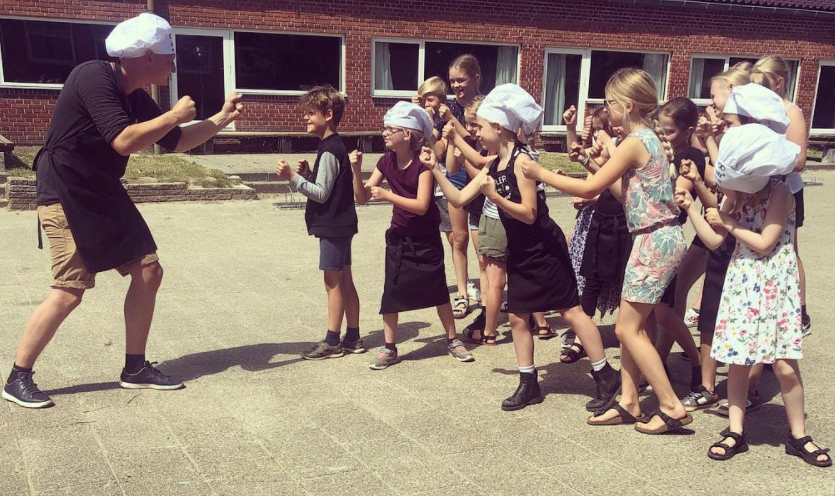
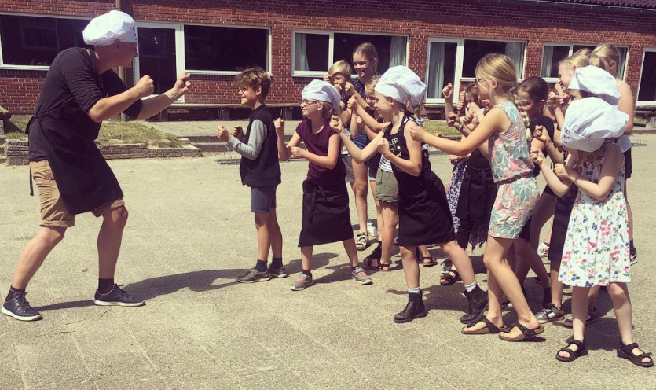

Formålet
med Madskoler er at give børn og unge i alderen 8-12 år viden om mad, måltider og motion på en sjov, lærerig og aktiverende måde. Samt at give dem værktøjer til at gøre varieret kost og sund livsstil til et naturligt valg.
Der udover er formålet at børn og unge: